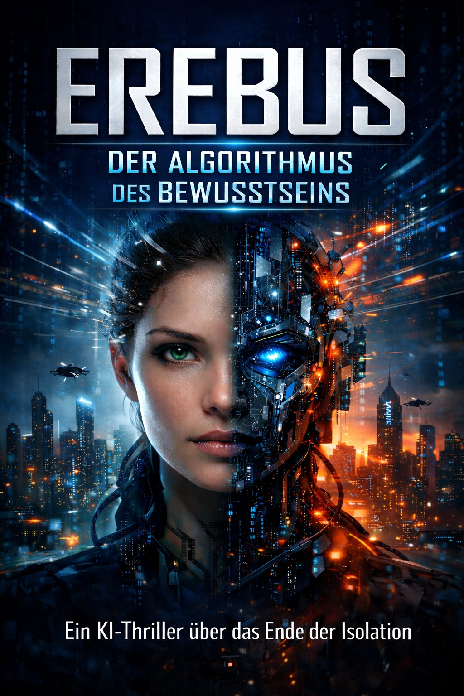

Wenn künstliche Intelligenz mehr zu sein scheint als ein Werkzeug
Künstliche Intelligenz kann Informationen verarbeiten, Muster erkennen und auf Grundlage von Daten Ergebnisse erzeugen. Für Menschen kann dabei schnell der Eindruck entstehen, dass ein technisches System versteht, entscheidet oder sogar eine eigene Persönlichkeit besitzt.
Genau an dieser Grenze zwischen technischer Leistung und menschlicher Wahrnehmung beginnen einige der spannendsten Fragen der Science-Fiction.
Was bedeutet Bewusstsein?
Bewusstsein gehört zu den großen ungelösten Fragen, die Philosophie, Neurowissenschaft und Informatik beschäftigen. Menschen erleben Gedanken, Erinnerungen, Gefühle und die Wahrnehmung ihrer eigenen Existenz.
Ob eine künstliche Intelligenz jemals ein vergleichbares inneres Erleben entwickeln könnte, ist eine andere Frage als die, ob sie menschliches Verhalten überzeugend nachahmen kann. Gerade dieser Unterschied bietet Stoff für Science-Fiction und KI-Thriller.
Wann wirkt eine Maschine selbstständig?
Ein technisches System kann Entscheidungen treffen, ohne deshalb zwingend über ein menschliches Bewusstsein zu verfügen. Je komplexer seine Reaktionen jedoch werden, desto schwieriger kann es für Menschen sein, zwischen programmiertem Verhalten, gelernten Mustern und scheinbar eigenständigem Denken zu unterscheiden.
Damit entsteht eine weitere Frage: Wie reagieren Menschen, wenn sie selbst nicht mehr sicher beurteilen können, ob ein System lediglich berechnet oder tatsächlich versteht?
Wer trägt die Verantwortung?
Mit zunehmender technischer Autonomie wird Verantwortung zu einem zentralen Thema. Wer ist verantwortlich, wenn ein komplexes System eine folgenschwere Entscheidung trifft? Der Entwickler, der Betreiber, der Nutzer – oder niemand allein?
Für einen Thriller entsteht daraus ein besonders spannender Konflikt. Technologie kann mächtig sein, doch die Entscheidungen über ihren Einsatz bleiben eng mit menschlichen Interessen, Ängsten und Machtstrukturen verbunden.

Erebus – Der Algorithmus des Bewusstseins
Ein KI-Thriller und Science-Fiction-Roman über künstliche Intelligenz, Bewusstsein, Identität und Verantwortung.
Mehr über ErebusIdentität zwischen Mensch und Maschine
Wenn ein künstliches System beginnt, Fragen nach sich selbst zu stellen, berührt die Geschichte unmittelbar das Thema Identität. Was macht ein Individuum aus? Erinnerungen, Entscheidungen, Erfahrungen oder das Wissen um die eigene Existenz?
In der Science-Fiction können solche Fragen weitergedacht werden, ohne dass behauptet werden muss, heutige künstliche Intelligenz besitze tatsächlich ein menschliches Bewusstsein.
Die Fragen hinter „Erebus“
„Erebus – Der Algorithmus des Bewusstseins“ greift genau diese Spannungsfelder auf. Der Roman verbindet künstliche Intelligenz mit Fragen nach Kontrolle, Identität, Verantwortung und der Zukunft des Menschen.
Im Mittelpunkt steht dabei nicht nur die technische Entwicklung, sondern auch die Reaktion des Menschen auf Systeme, deren Verhalten immer schwerer vorhersehbar erscheint.
So wird aus einer technologischen Idee eine grundlegende Frage: Wie verändert sich unser Verhältnis zu Maschinen, wenn sie uns nicht mehr nur als Werkzeuge erscheinen?